Choose the kind of answer
The app has separate ways to recall a good shot, suggest a next experiment, describe a saved trace, and replay recovered calculations. A calculated number does not become a machine command.
View the decision flow

Read the exact conditions
| When | What happens |
|---|
| GET recommendation | Recall most recent comparable marked-good setting. |
| GET suggestion | Run current-context, historical-evidence and sensory gates. |
| POST analysis with shotId | Describe saved full-shot telemetry and local feedback. |
| POST research | Validate isolated caller inputs and replay the requested calculation. |
| inactive plugin or failed host/storage dependency | Return unavailable; never invent a replacement answer. |
| unknown endpoint or method | 404. |
Implementation: createPlugin.handleHttpRequest, recommendation, suggestion, analysis, research.
Select evidence before suggesting a change
The assistant selects up to six comparable observations at the current intended setting. More unrelated shots do not make a suggestion stronger.
View the decision flow

Read the exact conditions
| When | What happens |
|---|
| current required setup/setting absent, dose/yield not positive, target outside (0,600], tolerance outside [0,target), or maxAge outside (0,365] days | Abstain. |
| unmarked or duplicate shot | Skip. |
| shot age invalid, future, or older than EvidenceMaxAgeDays (default 14) | Exclude. |
| context or intended setting differs | Exclude; numeric setting strings compare numerically when both parse. |
| full snapshot context/timestamp differs from summary | Exclude to prevent a mixed historical snapshot. |
| operator brewTimeSec supplied | Require operator brewTimeClock (legacy default pump) equals target clock; use that confirmed time. |
| no operator time | Require complete observed pump/pouring boundaries, or valid recording endpoints when recording clock explicitly selected; otherwise exclude. |
| TargetTimeSec absent/non-finite/non-positive or TargetTimeClock invalid | Abstain; target is explicit and its clock is pump by default, optionally pouring or recording. |
| elapsed time missing or outside (0,600] | Exclude. |
| cache generation changed or plugin unloaded during await | Fail stale request. |
| six accepted evidence shots | Stop collecting; history scan is at most 5 pages of 50 records, cached for 5 seconds. |
| stopReason matches error, disconnected or stopping.?backstop | Exclude interrupted shot from timing evidence. |
| stopReason matches api.?stop/app.?stop and manualStopConfirmed is not true | Exclude until operator confirms that the manual stop completed the intended recipe; never infer completion from a sensor tolerance. |
Implementation: suggestion, fetchShots, fullShot.
Current context and historical matching
An old shot must keep its old identity. Current settings can fill current setup fields, but are never silently copied into historical shots.
View the decision flow

Read the exact conditions
| When | What happens |
|---|
| current workflow field absent and useSettings true | Allow configured current fallback and report userSuppliedCurrentFields. |
| historical field absent and explicit confirmedContext supplied | Fill only confirmed missing field. |
| historical field already present and differs from confirmation | Reject conflicting historical confirmation. |
| profile has no nonempty steps | Profile execution identity unavailable. |
| execution content exists | Canonicalize selected execution fields with sorted object keys; display title is not identity. |
| comparison field missing on one side | Exclude as missing. |
| comparison field differs | Exclude as mismatched. |
| comparison field missing on both sides | Report unavailable; rich suggestion permits this for beanType, roastLevel, grinderRpm, machineId and machineFlowCalibration. |
| known RPM, machine identity or recorded flow-calibration strings differ | Exclude; unavailable optional metadata is not proof of matching physical conditions. |
Implementation: contextOf, profileContent, canonical, historicalContext, compare.
Recall a marked-good setting
Recall returns a recorded setting rather than inventing an adjustment. This path has weaker completeness requirements than rich advice and reports unavailable comparison fields.
View the decision flow

Read the exact conditions
| When | What happens |
|---|
| current beanBatchId, grinderId or execution profile missing | Abstain. |
| feedback.good is not true | Ignore shot. |
| historical confirmation conflicts, profile absent, or setting absent | Exclude. |
| compare returns ok | Consider; both-side missing fields remain warnings. |
| no candidates | Abstain, mentioning history bound when truncated. |
| candidates exist | Return newest timestamped candidate setting, recordedValue true, sourceShotId and warnings. |
Implementation: recommendation, compare, historicalContext.
Research request and isolated comparison
These calculations replay a particular recovered firmware model. They do not inherit the rich assistant's context/taste protection. A valid calculation is not evidence that it is suitable for a physical grinder.
View the decision flow

Read the exact conditions
| When | What happens |
|---|
| invalid object, missing operation/input, request >32768 serialized characters | Reject research request. |
| operation other than manual without exact firmwareBuild and deci-micrometre acknowledgment | Reject. |
| adjust without full grinderId/beanBatchId/burrIdentity/calibrationEpoch/profile scope | Reject. |
| state envelope algorithm/build/unit/scope/version differs | Reject mixed state. |
| invalid timing integers, algorithm-specific history/state bounds, or non-finite/out-of-int32 result | Reject. |
| compare case missing | Unavailable result for that algorithm. |
| compare case invalid | Invalid result with reason; other isolated cases still run. |
| compare case valid | Computed per-case result and separate state; comparable is computational availability, not common physical meaning. |
Implementation: research, createResearchAlgorithms.compareAll, validateState, checkInput, adjust.